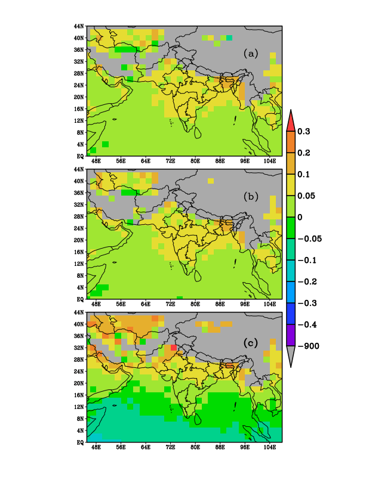
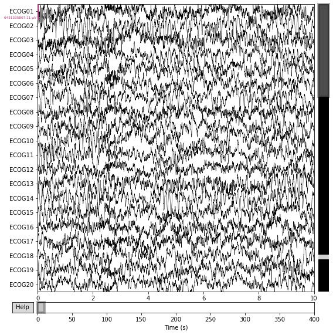

What have I been up to?
- May 2022 Would be working at Space Applications Centre, ISRO and CSIR-CEERI for the summer.
- August 2022 Completed my services as a Student Relations Executive at Student Welfare Department Nucleus for BITS Pilani, Hyderabad.
- July 2022 Completed my services in the Recovery and Remote Sensing and Image Processing teams at the BPHC chapter of SEDS.
Projects

Data Driven Remote Sensing Approach For Peri-Urban Demarcation of Hyderabad City, India
Accepted at ACM COMPASS '23 | Accepted at IEEE IGARSS '23 (withdrawn)
with Hiten Vidhani, Ravi Bhushan, Manik Gupta, Lavanya Suresh, Timothy Clune

Retrieval of atmospheric water vapour profiles from COSMIC-2 Radio Occultation Constellation using Machine Learning
Work under review.
